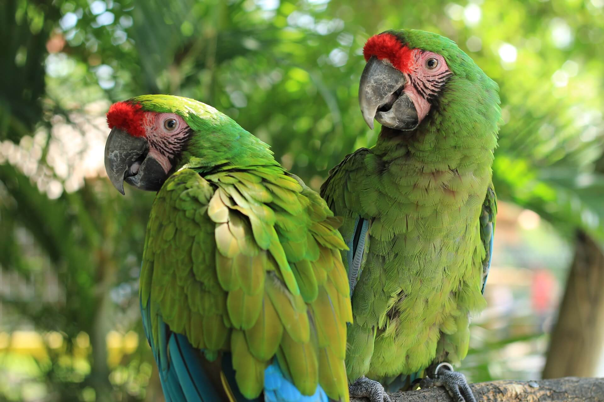
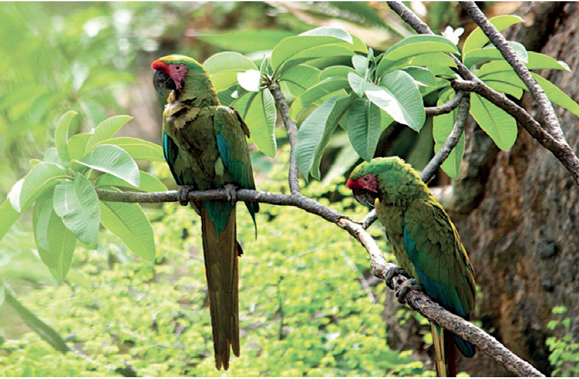

La guacamaya verde (Ara militaris) es una especie de ave grande y colorida que habita en bosques tropicales de México, Centro y Sudamérica. Se distingue por su plumaje predominantemente verde esmeralda, frente roja y plumas azules en la parte baja de la espalda. Son conocidas por su fuerte vocalización y por volar en parejas o pequeñas bandadas. Actualmente, está clasificada como 'Vulnerable' debido principalmente a la pérdida de su hábitat forestal por la deforestación, la tala ilegal de los árboles donde anidan (especialmente el pino y la ceiba) y el tráfico ilegal para el comercio de mascotas, lo que ha reducido drásticamente sus poblaciones en vida silvestre.


